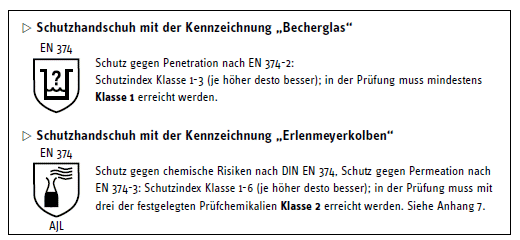
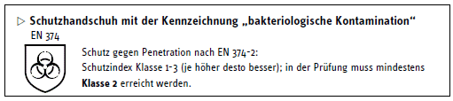
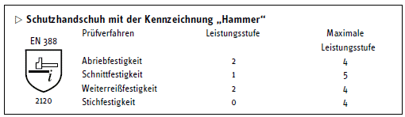
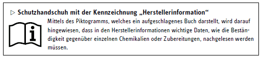

Vor dem Inverkehrbringen von Persönlichen Schutzausrüstungen (PSA) muss ein Hersteller einige Voraussetzungen beachten.
4.1 Kategorien
Persönliche Schutzausrüstungen werden generell in die Kategorien I, II oder III eingeordnet und müssen grundsätzlich mit der CE-Kennzeichnung versehen sein; sonst dürfen sie nicht als PSA in den Verkehr gebracht werden. Mit der CE-Kennzeichnung bescheinigt der Hersteller, dass die Persönliche Schutzausrüstung mit den festgelegten „grundlegenden Sicherheits- und Gesundheitsanforderungen“ der anzuwendenden EU-Richtlinien konform ist.
Kategorie III gilt für PSA, die gegen tödliche Gefahren oder ernste und irreversible Gesundheitsschäden schützen soll. Zu dieser höchsten Kategorie zählen unter anderem auch Chemikalienschutzhandschuhe. Nur bei Kategorie III muss neben der CE-Kennzeichnung eine 4-stellige Ziffer angeben sein, die der Erkennungsziffer der Stelle entspricht, die die Herstellung/Produktion überwacht.
4.2 Kennzeichnungen nach Norm
Piktogramme auf dem Handschuh dienen der richtigen Auswahl. In den einschlägigen Normen werden die notwendigen Eigenschaften von Schutzhandschuhen durch Piktogramme festgelegt.
4.3 Mögliche Kennzeichnung von Chemikalienschutzhandschuhen
Grundsätzlich gibt es zwei unterschiedliche Leistungsniveaus für Chemikalienschutzhandschuhe. Kennzeichnungen hierfür sind die Piktogramme „Becherglas“ oder „Erlenmeyerkolben“ auf dem Handschuh.

Ein Chemikalienschutzhandschuh, der mit einem Becherglas-Piktogramm gekennzeichnet ist, ist luft- und wasserdicht. Er kann gegebenenfalls zum Schutz gegen spezielle Chemikalien, die in der Herstellerinformation benannt sind, für begrenzte Zeit eingesetzt werden.
Ein Chemikalienschutzhandschuh, der mit einem Erlenmeyerkolben-Piktogramm gekennzeichnet ist, wurde gegen drei Chemikalien aus einer Liste (siehe Anhang 7) geprüft. Die zutreffenden Kennbuchstaben der Chemikalien sind Bestandteil der Kennzeichnung. Er kann bei Tätigkeiten mit den in der Herstellerinformation benannten Chemikalien für begrenzte Zeit eingesetzt werden.

Ein Chemikalienschutzhandschuh kann zusätzlich auch mit dem Piktogramm für „bakteriologische Kontamination“ gekennzeichnet sein. Zurzeit wird angenommen, dass Schutzhandschuhe, die bei der Prüfung der Penetration widerstehen, einen wirksamen Schutz gegen Bakterien und Pilzsporen bieten. Diese Annahme gilt nicht für den Schutz gegen Viren, denn Viren sind von der Größe her wesentlich kleiner als Bakterien und Pilzsporen.

Für Chemikalienschutzhandschuhe bestehen keine Mindest-Anforderungen an die mechanische Schutzwirkung. Im Rahmen der Zertifizierungen werden diese Prüfungen aber in der Regel durchgeführt und die Ergebnisse in der Herstellerinformation angegeben. Auch unter diesem Piktogramm findet man die Leistungsstufen wieder.
Die Kennzeichnungen, Piktogramme und Buchstabenkombinationen sollen zwar helfen, die Auswahl zu erleichtern; allerdings kann nicht darauf verzichtet werden, weitere Auskünfte den Herstellerinformationen zu entnehmen.

Nur hier sind die Leistungsstufen angegeben, die der Schutzhandschuh bei den Prüfungen gegenüber den reinen Chemikalien oder den Zubereitungen erreicht hat. Darüber hinaus finden sich in den Herstellerinformationen Angaben zur Fingerfertigkeit und den lieferbaren Größen. Die Hersteller geben außerdem an, ob bei der Herstellung der Schutzhandschuhe Stoffe verwendet wurden, die bekanntermaßen Allergien auslösen können.